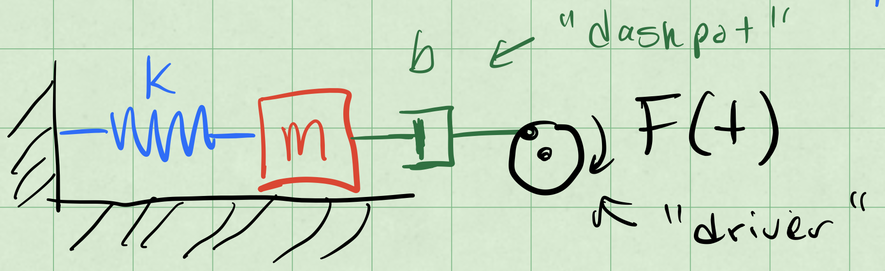
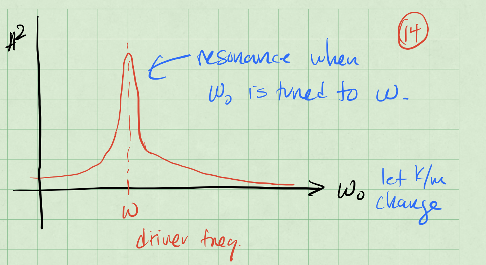

Week 9 - Notes: Driven Oscillations#
We have seen that oscillators that have only a potential energy term will oscillate forever – energy is conserved. While the oscillations can take any shape, they are periodic.
Damped oscillators dissipate energy, and so the oscillations will eventually die out. With the damped harmonic oscillator, the oscillations are still periodic, but the amplitude decreases over time. For that model,
we found that the relative strengths of \(\beta\) and \(\omega_0\) determined the type of oscillation. But the motion always died out because the damping removed energy from the system.
What if we kept putting energy into the system?
We can replenish the energy that is lost to damping by adding a driving force. These are driven oscillators, sometimes called forced oscillators. The driving force is a time dependent force that is added to the system.
Time Dependent Force Not Periodic
Here we used time dependent force to mean a force that depends on nearly any function of time \(F(t)\). The force does not have to be perdiodic, but it can be.
Systems can be given a kick or pulse of energy (which we might model with a delta function or a step function, or they can be driven by a periodic force.
For most of our examples, we will use a periodic driving force.
Driving the Oscillator#
For the damped harmonic oscillator, we had $\(m\ddot{x} + b \dot{x} + k x = 0\)$
Now we will add a driving force \(F(t)\) to the system, so that the equation of motion becomes $\(m\ddot{x} +b \dot{x} + k x = F(t)\)$
We can represent that setup in the picture below. The blue spring with spring constant \(k\) is attached to a red mass \(m\). There is a dashpot (damping) in green with damping constant \(b=2\beta\). The driving force \(F(t)\) is shown in black and called “driver”.

We write that differential equation as:
where \(\omega_0^2 = k/m\) and \(2\beta = b/m\). The function \(f(t)\) is the driving force per unit mass.
Note that this differential equation remains linear.
Why? Because the “operations” on x(t) are linear.
Linearity of Differential Equations#
A linear differential equation has many nice properties. In particular, the superposition of solutions and the uniqueness of solutions. So it is worth knowing when you have one.
Claim: \(\dfrac{d}{dt}\) is a linear operator.
What is an operator? It is simply a function that takes a function as an input and returns another function as an output. The derivative is a function that takes a function and returns another function, namely the slope of the tangent line to the original function everywhere it is defined and differentiable.
Let’s prove that \(\dfrac{d}{dt}\) is a linear operator.
Let \(x(t) = x_1(t) + x_2(t)\), where \(x_1(t)\) and \(x_2(t)\) are two functions. Then
We can distribute the derivative across the sum of the two functions. Thus \(\dfrac{d}{dt}\) is a linear operator.
This also suggests that constants and other simple derivatives are linear operators (e.g., \(\dfrac{d^2}{dt^2}\) and \(\dfrac{d^3}{dt^3}\)). And because of the distributive property, any linear sum of linear operators is also a linear operator (e.g., \(\dfrac{d^2}{dt^2} + \dfrac{d}{dt}\)).
We can write the diffferential equation for the driven oscillator as
We group the terms of the left hand side into a single operator, \(\mathcal{D}\), so that
The operator \(\mathcal{D}\) is a linear differential operator. This compact notation expresses the linearity of the differential equation.
Effect of a Linear Operator on our Solutions#
Because \(\mathcal{D}\) is a linear operator, we can distribute it. This results in our finding a linear combination of solutions to the differential equation. This is built up quite easily in three steps.
We can allow the operator to act on a function scaled by a scalar constant \(a\):
We can allow the operator to act on a sum of functions:
We can allow the operator to act on a linear combination of functions:
This is the superposition principle in action. But we have to be careful when we apply it. For example, when,
we must first solve the homogeneous equation, \(\mathcal{D} x(t) = 0\).
Homogeneous and Particular Solutions#
The damped driven oscillator is a linear differential equation. But that means that any solution to the equation where the driving force is zero is a solution to the equation where the driving force is non-zero. And, thus must be added to the solution of the non-homogeneous equation.
Let’s use the language of differential operators to express this. We want to solve:
where \(\mathcal{D}\) is a linear differential operator. But any solution to the homogeneous equation, \(\mathcal{D} x_h(t) = 0\), is a solution to the non-homogeneous equation.
We use the notation \(x_h(t)\) to denote the solution to the homogeneous equation.
So let’s use the superposition principle to write the solution to the non-homogeneous equation as a sum of two parts:
where \(x_p(t)\) is a particular solution to the non-homogeneous equation. We will get to the name of \(x_p(t)\) in a moment. Let’s the focus on the mathematical properties of the solution for a moment.
With the homogeneous solution, \(\mathcal{D} x_h(t) = 0\), we have
That is what defines the particular solution. In our case, that it is specific to the driving force \(f(t)\) we have chosen.
Summary: When solving \(\mathcal{D} x(t) = f(t)\), the solution is the sum of the homogeneous solution \(x_h(t)\) and a particular solution \(x_p(t)\). We typically solve the homogeneous equation \(\mathcal{D} x_h(t) = 0\) first.
The solutions \(x_h(t)\) satisfies the unknowns set by the initial conditions. The particular solution \(x_p(t)\) is a solution to the non-homogeneous equation \(\mathcal{D} x_p(t) = f(t)\), so it will not depend on the initial conditions, how it is particular to the driving force \(f(t)\).
Example: Sinusoidal Driving Force#
Let’s consider a sinusoidal driving force. We will use the following notation for the driving force:
where \(f_0\) is the amplitude of the driving force and \(\omega\) is the angular frequency of the driving force. Note that \(\omega\) is not necessarily the same as \(\omega_0\).
So we can write the differential equation for the driven oscillator as
where \(\mathcal{D}\) is the linear differential operator
Note that if instead \(f(t) = f_0 \sin(\omega t)\), then we would have
where \(y(t)\) is the solution to the differential equation with a sine driving force and \(\mathcal{D}\) is the same linear differential operator. Writing both the \(x(t)\) of \(y(t)\) differential equations out, we have
Two Birds, One Stone#
We can cleverly combine these two equations into a singlle differential equation by using complex numbers.
We can similarly write \(f(t)\) as a complex sum:
Now because of linearity, we can write the differential equation for \(z(t)\) as
Written out, we have
Particular Solution#
We note the particular solution depends on the driving force. We can try one that follows the complex exponential form of the driving force.
where \(C\) is a complex constant. We can find \(C\) by substituting \(z_p(t)\) into the differential equation.
We can cancel the \(e^{i \omega t}\) terms on both sides of the equation, and we are left with
We can solve for \(C\):
We found \(C\) and it is fully determined. But it is a complex number. Ultimately, we want a real valued solution, but we remember that
And we can write the coefficient \(C\) as a magnitude \(A\) and a phase \(\delta\):
Writing the Complex Amplitude#
Let’s find that form of \(C\).
So the amplitude of the particular solution is
We can find the phase by looking at \(C= A e^{-i \delta}\):
Note that both \(f_0\) and \(A\) are real numbers, so the complex phase of \(\delta\) is determined by the complex number on the right side of the equation.
That is, the phase of the \(e^{-i\delta}\) term and the phase of the complex number \(\left(\omega_0^2 - \omega^2 + 2\beta i \omega\right)\) are the same. So we can write ratio of their imaginary and real parts as,
Again, this number is fully determined without initial conditions.
Back to the Particular Solution#
We proposed a solution \(z_p(t) = C e^{i \omega t}\), where \(C\) is a complex constant. This became
where \(A\) is a real number and \(\delta\) is a real number. Note we can write the particular solutions for both \(x(t)\) and \(y(t)\) as
General Solution#
The proposed general solution was
And for our sinusoidal driving force, we have found the particular solution, so that we can write:
where \(x_h(t)\) is the solution to the homogeneous equation, \(\mathcal{D} x_h(t) = 0\).
We propose a solution form for \(x_h(t)\) that is a linear combination of two exponential functions (as we did before):
These are solutions to the damped oscillator, and we refer to them as the “transient” solutions. They are transient because they die out over time due to damping.
For a weakly damped system, \(\beta^2 < \omega_0^2\), which is the case that is most interesting to us, we can write the solution as,
where \(A_{tr}\) is the amplitude of the transient solution, \(\omega_1 = \sqrt{\omega_0^2 - \beta^2}\) is the damped frequency (per usual), and \(\delta_{tr}\) is the phase of the transient solution.
Resonance and Tuning#
A curious thing about the long term behavior (after the transients die out) is that we can observe large amplitudes at particular choices of driving. Consider the long term (stady state) solution to the driven damped harmonic oscillator:
where,
Let’s allow \(\beta\) to be small so that \(4\beta^2 \omega^2\) is small. If we focus on the denominator, we can see that the amplitude will be small when \(\omega\) is far from \(\omega_0\). But if we choose \(\omega\) to be close to \(\omega_0\), then the denominator will be small, and the amplitude will be large.
The second result is a resonance effect. The system will resonate at a particular frequency, \(\omega_0\), and the amplitude of the oscillations will be large. Below is a sketch of the response of a driven damped harmonic oscillator to a sinusoidal driving force. The amplitude of the oscillations is plotted as a function of the driving frequency \(\omega\).

Achieving Resonance#
There’s two ways that we can approach this. Let’s focus on the denominator of the amplitude equation:
When that denominator is small, the amplitude will be large. There’s two ways to make the denominator small.
Case 1: Tune the \(\omega_0\) (the natural frequency of the system) to be close to \(\omega\) (the driving frequency). This is how a car radio works. You change the resistance of the radio circuit to change the natural frequency of the radio circuit. You can then tune the radio to a particular station that is broadcasting at a particular frequency. This gives an amplified signal,
When \(\omega_0 = \omega\), then the denominator is equal to \(4\beta^2 \omega_0^2\). The amplitude is
Case 2: Tune the driver (\(\omega\)) to be close to \(\omega_0\).
Because we are adjusting the driver, we are seeking the driving frequency that minizes the denominator. We can do this by setting the derivative of the denominator with respect to \(\omega\) to zero.
Thie first solution is when there is no driver. But the second, \(\omega_2\), is the frequency that minimizes the denominator. We can write that as
We can a strong response when \(\omega_0^2 \gg 2\beta^2\) or when \(\omega_2 \approx \omega_0\).